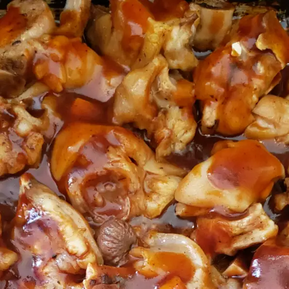

Pig trotters

Description
This is a recipe for trotters passed down over time in my family. This was made every New Year's Eve to bring in the new year. A relatively inexpensive African-American dish. Very delicious!
Serve with homemade potato salad, Southern style greens and candied yams and cornbread. It is even better the next day, and it freezes well. Serve sprinkled with a little more vinegar or hot sauce to taste.
Ingredients
- 8 pig feet, split
- 2 celery ribs, chopped
- 1 onion, chopped
- ¾ cup white vinegar
- 2 tablespoons red pepper flakes (Optional)
- 2 tablespoons seasoned salt
- 1 tablespoon chopped garlic
- 1 teaspoon ground black pepper
- 2 bay leaves
- water, or as needed to cover
Steps
- Thoroughly wash pig feet in cold water
- Place into a large pot or Dutch oven
- Add celery, onion, vinegar, red pepper flakes, seasoned salt, garlic, black pepper, and bay leaves to the feet
- Pour in water to cover
- Bring to a boil
- Reduce heat to low, and simmer until meat is tender and falling off the bones, about 2 hours
Back to home